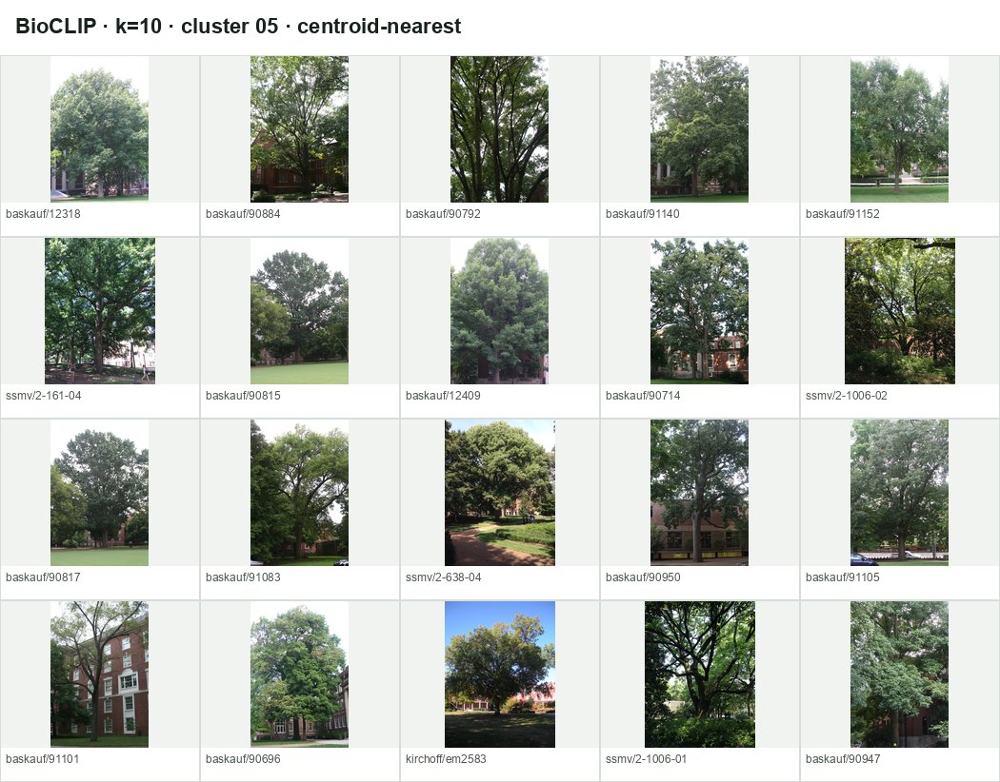

Frozen BioCLIP and DINOv3 embeddings are examined as perceptual spaces. K-means and nearest-neighbor retrieval use no species label. Labels, organs and benchmark outcomes are joined only afterward for analysis.
NMI and purity are post-hoc label summaries, not clustering inputs. ARI compares BioCLIP and DINO cluster assignments at the same k. Higher values indicate stronger association or agreement, not necessarily a better representation.
Space
k
Species NMI
Organ NMI
Species purity
Organ purity
Cluster size min/median/max
Cross-space ARI
BioCLIP
10
0.449
0.129
20.6%
35.0%
96/136/302
0.159
BioCLIP
20
0.615
0.163
33.3%
39.7%
29/74/200
0.195
BioCLIP
50
0.752
0.196
63.4%
44.7%
13/29/103
0.208
DINOv3
10
0.236
0.473
12.3%
68.9%
123/164/209
0.159
DINOv3
20
0.316
0.522
16.5%
79.6%
33/80/140
0.195
DINOv3
50
0.454
0.499
28.8%
83.2%
8/30/82
0.208
Mean cross-observation BioCLIP/DINO neighbor overlap@10: 28.4%; median: 30.0%.
Error-enriched cluster review
Shown clusters are ranked within each space and k by BioCLIP-error or all-four-wrong enrichment. “FDR-enriched” uses a one-sided hypergeometric test with BH q≤0.10; “descriptively enriched” means at least 5 test images plus ≥1.5× BioCLIP-error or ≥2× all-four-wrong enrichment. No cluster is automatically named.
BioCLIP · k=10

Cluster 05 FDR-enriched
180 images · 23 test · species purity 8.3% · organ purity 82.8%
Species Ulmus americana 15, Fraxinus americana 15, Quercus rubra 13, Quercus alba 13
Organs whole tree (or vine) 149, bark 20, whole tree 7, inflorescence 2
Each query is followed by its eight closest images after excluding every image from the same observation. Similarity is cosine similarity in the named frozen embedding space.
Acer rubrum
baskauf/89381 · whole tree (or vine)
BioCLIPDINOv3
Acer rubrum
baskauf/91011 · whole tree (or vine)
BioCLIPDINOv3
Acer rubrum
baskauf/91016 · whole tree (or vine)
BioCLIPDINOv3
Betula lenta
baskauf/37293 · bark
BioCLIPDINOv3
Betula lenta
baskauf/37296 · twig
BioCLIPDINOv3
Fraxinus americana
ssmv/2-638-01 · bark
BioCLIPDINOv3
Fraxinus americana
ssmv/2-638-02 · whole tree (or vine)
BioCLIPDINOv3
Juglans cinerea
baskauf/11812 · bark
BioCLIPDINOv3
Nyssa sylvatica
baskauf/51398 · inflorescence
BioCLIPDINOv3
Nyssa sylvatica
baskauf/91065 · whole tree (or vine)
BioCLIPDINOv3
Quercus alba
baskauf/12528 · leaf
BioCLIPDINOv3
Quercus bicolor
baskauf/51186 · inflorescence
BioCLIPDINOv3
Quercus bicolor
baskauf/91110 · whole tree (or vine)
BioCLIPDINOv3
Quercus rubra
baskauf/89376 · whole tree (or vine)
BioCLIPDINOv3
Quercus rubra
baskauf/90972 · whole tree (or vine)
BioCLIPDINOv3
Rhus copallinum
baskauf/10942 · twig
BioCLIPDINOv3
Ulmus americana
baskauf/11690 · bark
BioCLIPDINOv3
Repeated within-genus confusion pairs
Within-species similarity excludes same-observation image pairs. Nearest-neighbor rates also exclude the query observation. These values describe local geometry; they do not establish a causal explanation for a classification error.
Quercus palustris → Quercus alba
Repeated confusion count across the four baselines: 14 model-prediction occurrences.
BioCLIP global PCA and UMAP; pair species highlighted.DINOv3 global PCA and UMAP; pair species highlighted.
PCA and UMAP are two-dimensional projections of the full 1,641-image space. Apparent separation or overlap can change under projection and should not be over-interpreted.